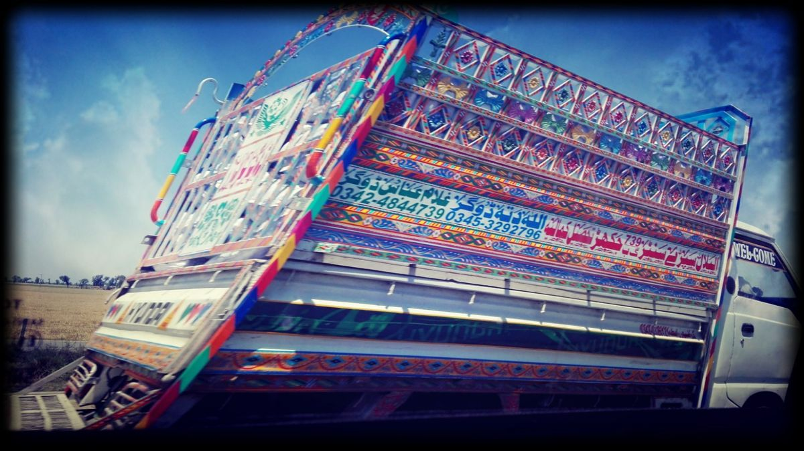
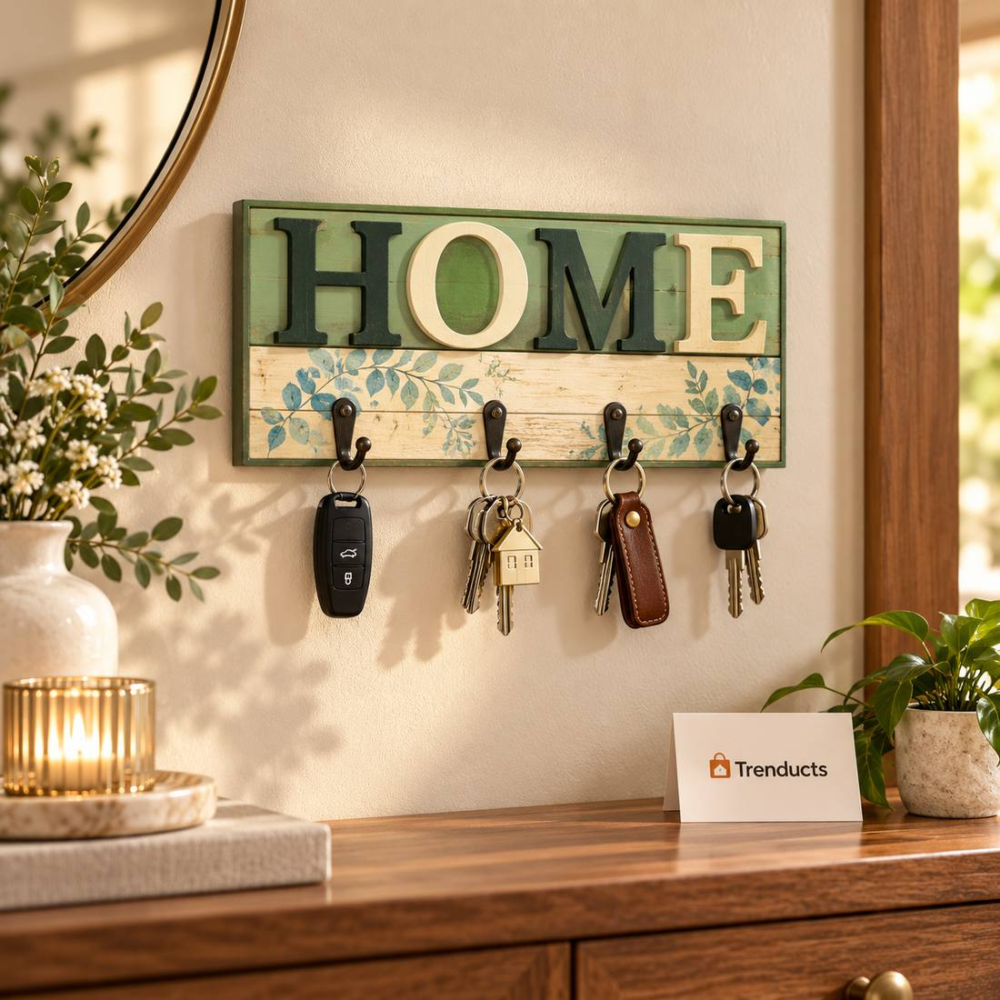
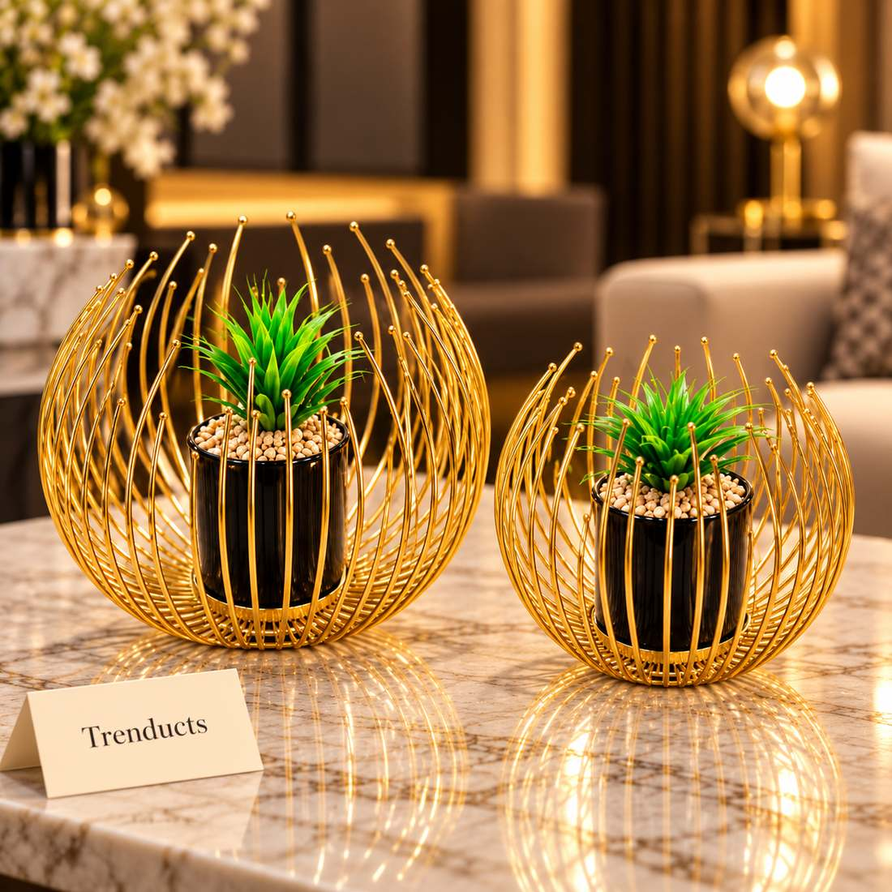

Affordable home decor ideas for Pakistani homes: decluttering, lighting, textiles, plants, wall decor, local craft and small accents that make rooms feel new.



Photos: A colourfully painted truck on a Pakistani road, an example of truck art. Photo: imusasheikh, CC BY-SA 4.0, via Wikimedia Commons; HOME Shelf Style Wooden Wall Key Holder (product photo: Trenducts.pk); Gold Wire Cage Metal Flower Pot Set – 2 Pcs Set (product photo: Trenducts.pk)
You do not need a large budget or an interior designer to make your home feel fresh. Many of the best-looking Pakistani homes are not the most expensive ones; they are the ones where each room has a clear purpose, good light and a few well-chosen pieces. Whether you live in a flat in Karachi, a family house in Faisalabad or a rented portion in Rawalpindi, these ideas focus on changes that cost little but make a visible difference.
The cheapest decor upgrade is taking things away. Most drawing rooms and lounges collect old newspapers, chargers, showpieces nobody likes and stacks of things waiting to be sorted. Clear surfaces make a room look bigger and calmer, and they make the pieces you keep stand out. Give away or recycle what you do not need. Then decide what each surface is for: a side table for a lamp and a book, a console for keys and a small vase.
Moving furniture costs nothing. Try pulling the sofa a little away from the wall, angling chairs towards each other for conversation, or moving a cabinet so that it no longer blocks a window. In many Pakistani homes, furniture is lined up against the walls of the drawing room. A small change in arrangement can make the room feel more welcoming for guests.
Lighting is one of the most powerful and affordable tools in decor. A single overhead tube light makes a room look flat. Adding a warm table lamp, a floor lamp in a corner or a few fairy lights on a shelf creates depth and makes evenings feel cosy. Warm-white bulbs feel softer in living rooms and bedrooms, while cooler light suits kitchens and study areas. During load-shedding, rechargeable lamps can do double duty as decor and backup lighting.
Cushion covers, throws, table runners and curtains are easy ways to add colour without painting. Choose one main colour and one accent colour for each room and repeat them in two or three places. Pakistan has a rich textile culture, so look at local block prints, ajrak patterns from Sindh, embroidered fabrics or khaddar. Changing cushion covers seasonally, lighter in summer and richer in winter, keeps the room interesting.
Plants make any room feel alive. Money plants, snake plants and pothos are common choices because they are forgiving and grow well indoors in many parts of the country. Put them in simple pots or decorative planters, and group a few together near a window. If your home gets little sunlight, a small artificial plant or a vase of fresh flowers from the local market can still lift a corner.
Blank walls make rooms feel unfinished. Ideas that do not cost much:
Pakistani design traditions are full of colour and pattern. Bright truck art, with its flowers, birds and bold borders, has inspired trays, kettles, mirrors and wall pieces. Blue pottery from Multan, onyx pieces, brass items and handmade baskets also add character. One or two craft pieces in a room give it a sense of place that mass-produced decor alone cannot.
Sometimes a single item changes the feel of a surface: a vase with fresh flowers, a tray that groups remote controls and coasters, a candle holder, a small sculpture or a decorative bowl. Group accents in odd numbers, such as three items of different heights, rather than spreading many small pieces everywhere.
The entrance is the first thing guests see, yet it is often where shoes, bags and helmets pile up. A small shoe rack, a hook for keys, a mirror and a plant or two can turn it into a welcoming space. Keeping the entrance tidy also stops dust from being carried further into the house, which matters in dusty cities. If space is tight, a narrow shelf with a basket underneath can handle shoes and post together.
Eid, weddings and family gatherings are natural moments to refresh the house. Instead of buying a lot at once, add one or two pieces each time. Over a year, your home changes gradually and every piece is something you chose with care.
Set a budget for each room and spend it first on the thing that will make the biggest difference, often lighting or textiles. Compare a few options before you buy, check dimensions carefully and read the return policy. For lamps, vases, planters, wall pieces and table accents, the Trenducts home decor collection has a wide range with cash on delivery across Pakistan.
A beautiful home grows over time. Start with a clear, uncluttered room, add warm light and a little colour, and let the rest follow.